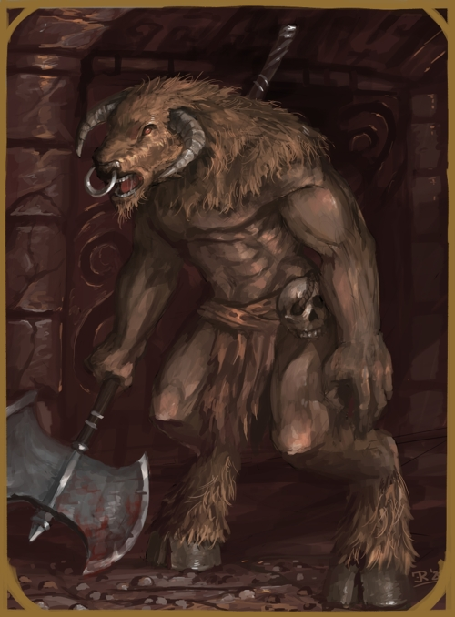

MINOTAUR - TAUR
MEDIUM HUMANOID

The aptly named minotaurs, so called due to their language and how often the word
"taur" is used within it, are large hulking mixtures of bull and human. Their head
is that of a bull, horned and snorting as are their legs, with the raised ankle
and hoof. Their body, though matted with long hair, is that of a muscled humanoid.
MINOTAUR CULTURE
Male minotaurs are mostly solitary creatures by nature, wandering the maze-like tunnels that
they dig through heavy rock in order to trap meals. Living with them will usually be a
small harem of female minotaurs and kidnapped female humanoids that are under their protection.
Surprisingly,
minotaurs are quite capable crafters, their tunnels well built and covered
by detailed floorings and walls of carved stone, and sometimes even rough creations of
basic metals such as copper or iron.
MINOTAUR RELIGION
Minotaurs have a pantheon of gods that watch over them, although their names are
rather similar to non-minotaurs, due to the language of minotaurs being grunts, snorts
and utterings of "taur". These gods are based off of natural wonders such as the
moon and sun, storms and winds and so on, each with their own name. Rough depictions
of these gods are often seen overlook by a great minotaur with a massive
two-handed axe and whose head has six curled horns, the great Taur.
RELIGION - TAUR, THE BLOODED AXE
| Status | Name | Realms |
|---|
| God | Taur | Victory/Blood/Hunt |
MINOTAUR DIMORPHISMS
The humanoid parts of the male and female minotaur species follow that of most other
humanoids. Males are of stronger build and larger frame, as well
as being taller by nature, while females are slightly smaller, and less muscled.
Beyond this, they are very much alike in their mind and abilities.
MINOTAUR STATISTICS
ADULT MALE
GENERAL ATTRIBUTES
| AGE | HEIGHT | SIZE | SIGHT |
| 12-50 | ~8'01'' | Medium - 1x1 | -/10/2 |
MOVEMENT
| RUNNING | CLIMBING | SWIMMING | FLYING |
| 6 - Perfect | 3 - Rough | 2 - Rough | - |
ABILITY SCORES
| STR | VIT | CON | AGI | DEX | INS | INT | WILL | WIS | CHA | BEA |
| 12 | 14 | 7 | 6 | 5 | 6 | 5 | 8 | 5 | 3 | 6 |
COMBAT ABILITY
| WOUNDS | INITIATIVE | ATTACK (MELEE) | ATTACK (RANGED) | MIGHT |
| 14 | 11 | 6 | 5 | 12 |
| DODGE | PARRY | DAMAGE | NAT. ARMOUR | PRESENCE (POWER) | PRESENCE (BEAUTY) |
| 6 | 5 | 4 | 3 | 11 | 7 |
NATURAL WEAPONS
| WEAPON | TYPE | MIGHT | DAMAGE | ADDITIONAL |
| None | - | - | - |
ADULT FEMALE
GENERAL ATTRIBUTES
| AGE | HEIGHT | SIZE | SIGHT |
| 12-45 | ~6'10'' | Medium - 1x1 | -/10/2 |
MOVEMENT
| RUNNING | CLIMBING | SWIMMING | FLYING |
| 6 - Perfect | 3 - Rough | 2 - Rough | - |
ABILITY SCORES
| STR | VIT | CON | AGI | DEX | INS | INT | WILL | WIS | CHA | BEA |
| 9 | 10 | 6 | 6 | 5 | 6 | 5 | 6 | 5 | 3 | 6 |
COMBAT ABILITY
| WOUNDS | INITIATIVE | ATTACK (MELEE) | ATTACK (RANGED) | MIGHT |
| 10 | 11 | 6 | 5 | 9 |
| DODGE | PARRY | DAMAGE | NAT. ARMOUR | PRESENCE (POWER) | PRESENCE (BEAUTY) |
| 6 | 4 | 3 | 2 | 8 | 6 |
NATURAL WEAPONS
| WEAPON | TYPE | MIGHT | DAMAGE | ADDITIONAL |
| None | - | - | - |